State Management: setState() dan Provider
Praktikum ini membahas pengelolaan State pada aplikasi Flutter menggunakan setState() dan Provider.
Materi meliputi konsep State sebagai data yang dapat berubah selama aplikasi berjalan dan memengaruhi tampilan antarmuka (UI). Selain itu,
praktikum membahas perbedaan penggunaan setState() untuk mengelola state lokal pada satu widget dan Provider untuk mengelola
state yang digunakan oleh beberapa widget atau halaman. Konsep tersebut diterapkan pada aplikasi ResepKu, seperti mengatur jumlah porsi pada
halaman detail resep dan mengelola daftar resep favorit, sehingga perubahan data dapat ditampilkan secara otomatis pada aplikasi.
Menerapkan StatefulWidget dan SetState() untuk mengelola perubahan jumlah porsi pada halaman detail resep.
Memahami keterbatasan state lokal ketika data perlu digunakan dan diakses oleh beberapa widget atau halaman.
Menerapkan package Provider menggunakan ChangeNotifier dan MultiProvider untuk
mengelola daftar resep favorit secara global.
context.watch, context.read, dan ConsumerMenerapkan context.watch, context.read, dan Consumer untuk membaca serta mengakses perubahan state pada beberapa halaman aplikasi.
Menampilkan halaman detail resep dengan porsi 6 menghasilkan 1800 kkal.
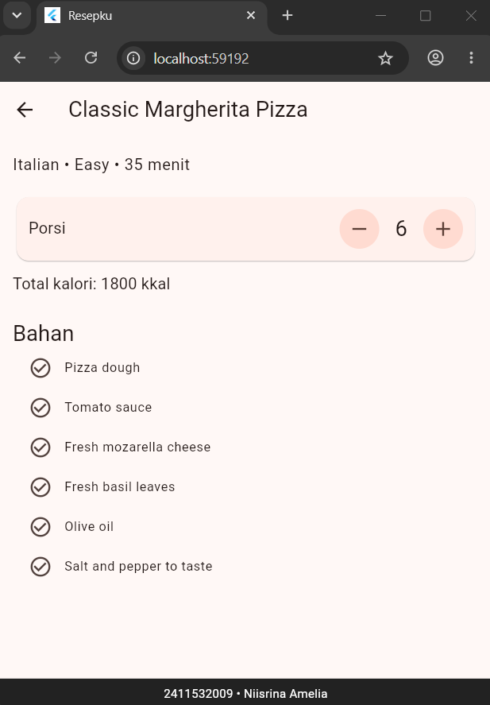
Menampilkan tombol - tidak aktif ketika porsi bernilai 1 dan baris kode yang menyebabkan hal tersebut.
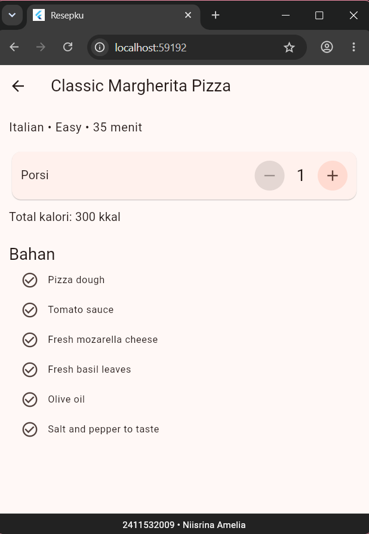
Baris kode yang menyebabkan tombol tidak aktif adalah berikut.
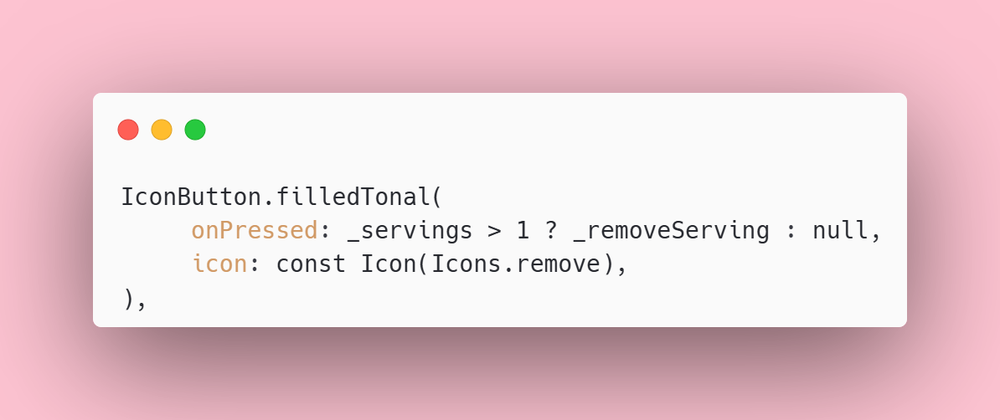
Ikon hati berubah ketika ditekan karena nilai _isFavorite diubah menggunakan setState().
Jika nilainya true, ikon menjadi hati berwarna merah, sedangkan jika false, ikon kembali menjadi
hati kosong.
_isFavorite
berada, dan apakah HomePage dapat membacanya?Jumlah resep favorit sebenarnya bisa ditampilkan di AppBar HomePage, tetapi tidak dapat dilakukan secara langsung dengan kode saat ini.
Variabel _isFavorite berada di dalam class _RecipeTileState, sehingga HomePage tidak dapat membaca status favorit
setiap resep secara langsung.
Halaman detail belum dapat mengetahui status favorit resep karena saat membuka DetailPage, kode hanya mengirimkan data resep melalui
parameter recipe, tanpa mengirimkan nilai _isFavorite.
| Skenario | Hasil yang Diharapkan | Kesesuaian |
|---|---|---|
| Tap ikon hati pada Margherita dan Alfredo di Home | Ikon berwarna merah, badge menunjukkan angka 2 | 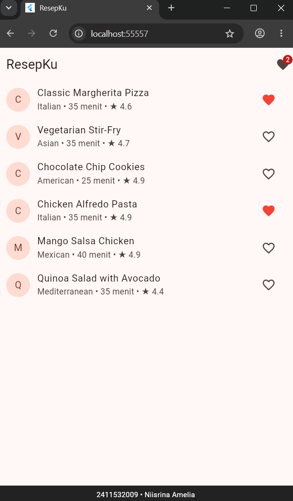 |
| Buka detail Margherita | Ikon hati di AppBar terisi | 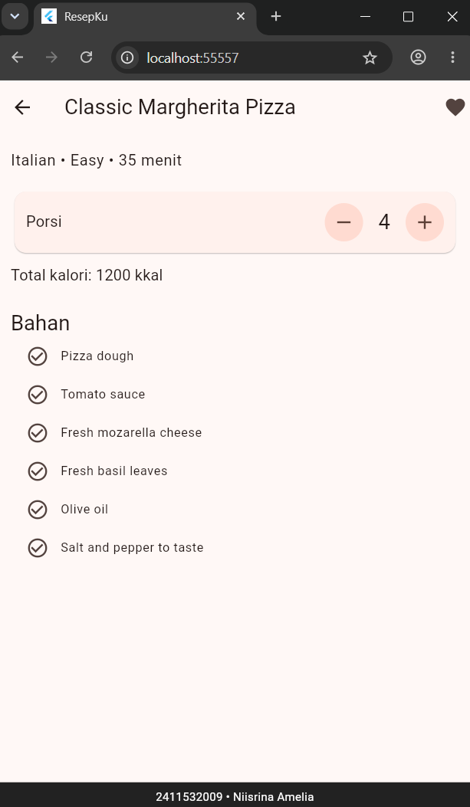 |
| Di halaman detail, tap ikon hati, lalu kembali ke home | Ikon Margherita kosong, badge menunjukkan angka 1 |
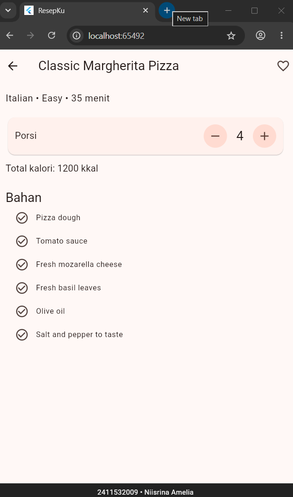 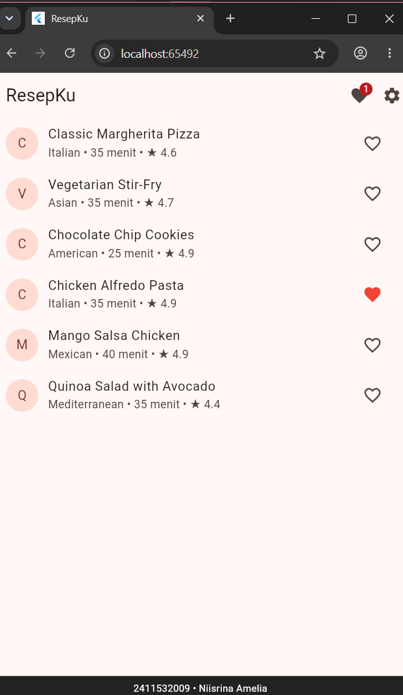 |
| Tap badge di AppBar | Halaman Favorit hanya berisi Alfredo | 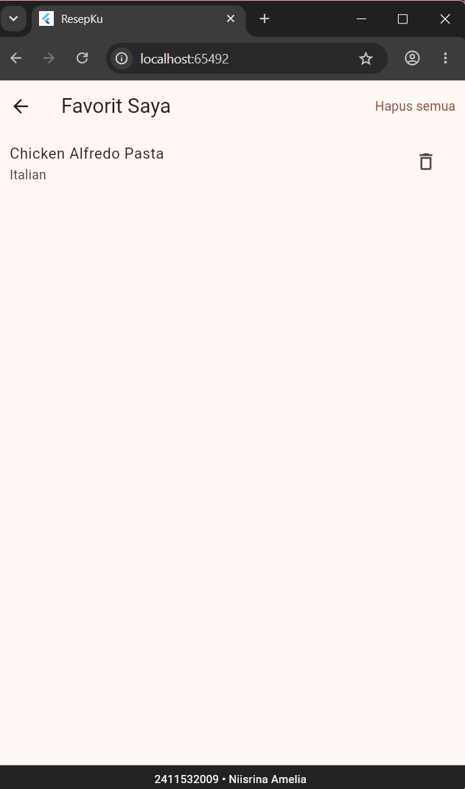 |
| Hapus Alfredo dari halaman Favorit, lalu kembali | Muncul pesan "Belum ada resep favorit", badge hilang |
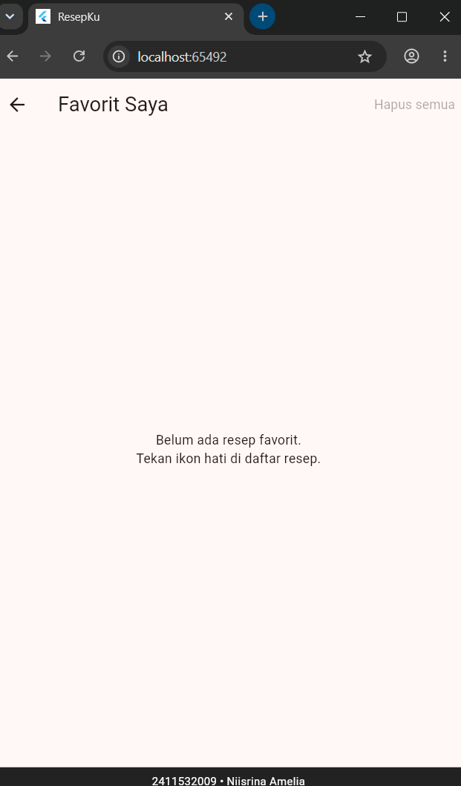 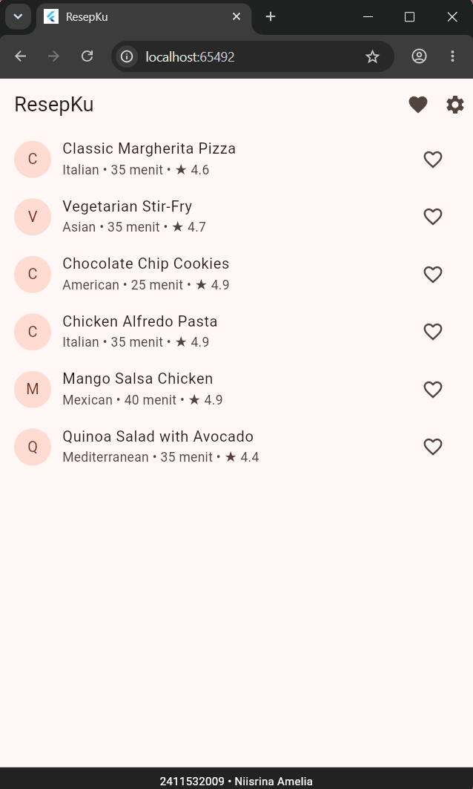 |
| Ubah porsi menjadi 2, kembali ke Home, lalu buka lagi resep yang sama | Porsi kembali ke nilai awal, karena state lokal ikut dibuang ketika halaman ditutup |
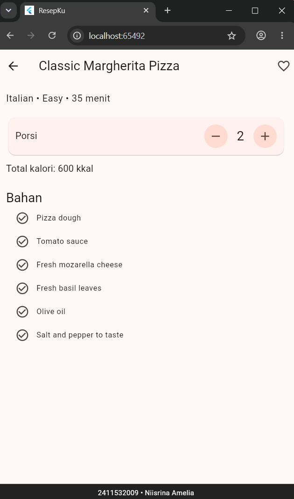 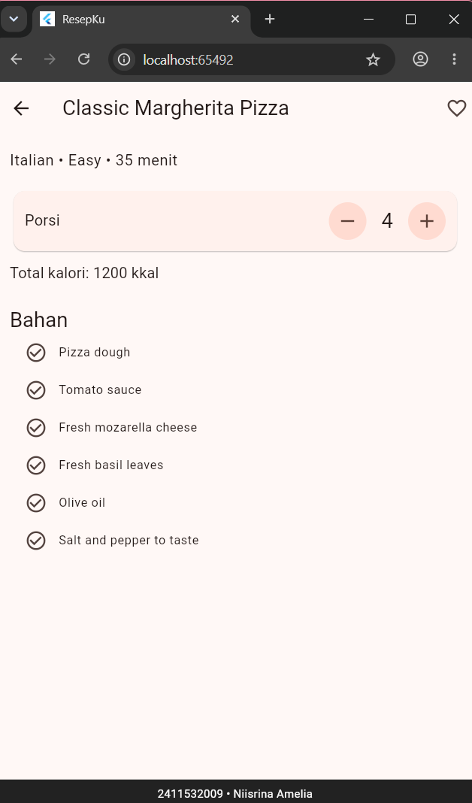 |
a. Pertanyaan 1: ikon hati berubah ketika ditekan karena nilai _isFavorite diubah
menggunakan setState(). Jika nilainya true, ikon menjadi hati berwarna
merah, sedangkan jika false, ikon kembali menjadi hati kosong.
b. Pertanyaan 2: jumlah resep favorit sebenarnya bisa ditampilkan di AppBar HomePage, tetapi tidak dapat
dilakukan secara langsung dengan kode saat ini. Variabel _isFavorite berada di dalam
class _RecipeTileState, sehingga HomePage tidak dapat membaca status favorit setiap resep
secara langsung.
c. Pertanyaan 3: halaman detail belum dapat mengetahui status favorit resep karena saat membuka DetailPage,
kode hanya mengirimkan data resep melalui parameter recipe, tanpa mengirimkan nilai
_isFavorite.
setState() dan tidak dimasukkan ke Provider? Hubungkan
jawaban dengan hasil skenario 6 pada Langkah C.7.Jumlah porsi tetap menggunakan setState() karena data tersebut hanya dibutuhkan sementara pada
halaman detail resep dan tidak perlu dibagikan ke halaman lain. Hal ini dibuktikan pada skenario 6,
ketika porsi diubah menjadi 2 lalu kembali ke Home dan membuka resep yang sama, jumlah porsi kembali ke
nilai awal karena state lokal ikut hilang ketika halaman ditutup. Oleh karena itu, penggunaan setState()
sudah cukup untuk mengelola jumlah porsi.
ChangeNotifierProvider dari main() ke dalam HomePage (membungkus Scaffold). Apa
yang terjadi ketika halaman Favorit dibuka? Jelaskan penyebabnya berdasarkan posisi provider di widget tree.
Setelah itu, kembalikan kodenya seperti pemula.Ketika halaman Favorit dibuka, aplikasi dapat mengalami error ProviderNotFoundException karena
halaman Favorit tidak dapat menemukan Provider. Hal ini terjadi karena Provider hanya dapat diakses oleh widget yang
berada di bawahnya dalam widget tree. Jika Provider dipindahkan ke HomePage, halaman lain yang berada
di luar HomePage tidak dapat mengakses data tersebut. Oleh karena itu, Provider perlu dikembalikan ke main()
agar dapat digunakan oleh seluruh halaman aplikasi.
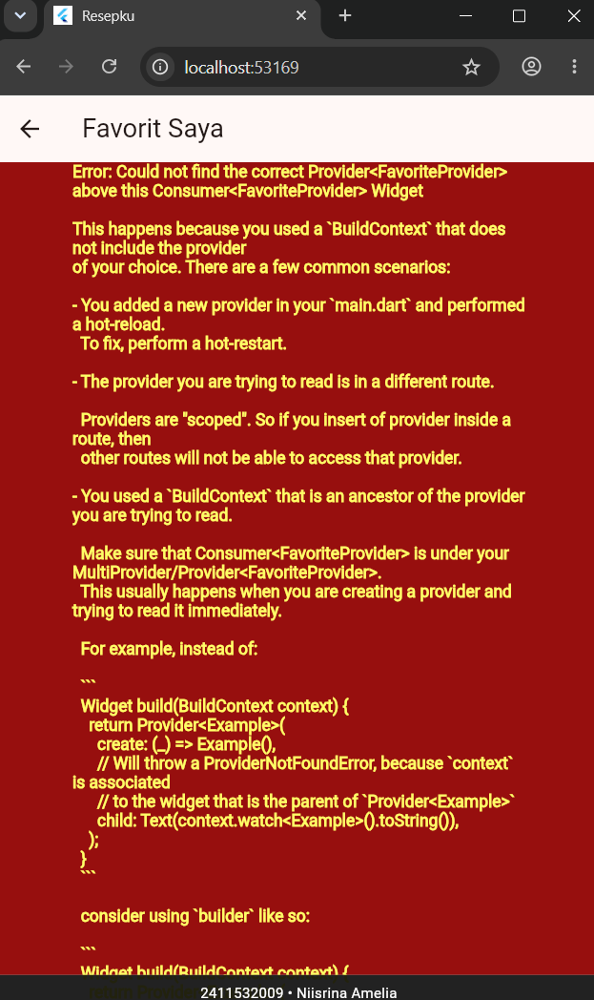
Menambahkan halaman Pengaturan yang berisi SwitchListTile 'Mode Gelap'. Ketika switch diaktifkan, seluruh aplikasi berubah ke tema gelap.
| File Program | Dokumentasi Kode Program |
|---|---|
theme_provider.dart |
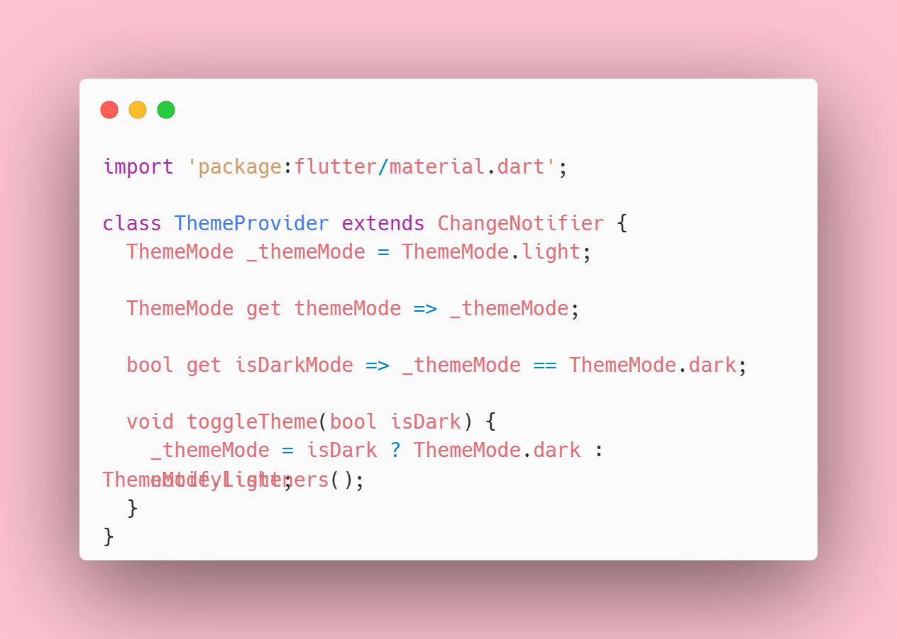 |
main.dart |
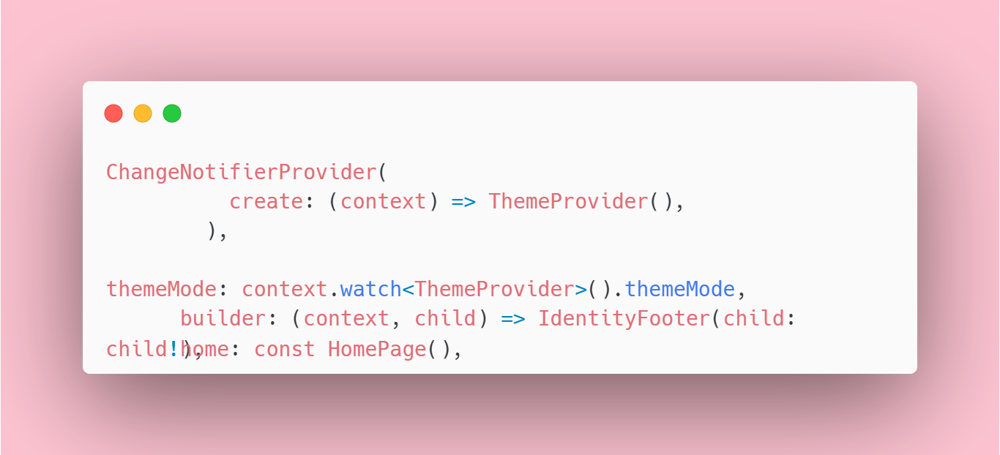 |
settings_page.dart |
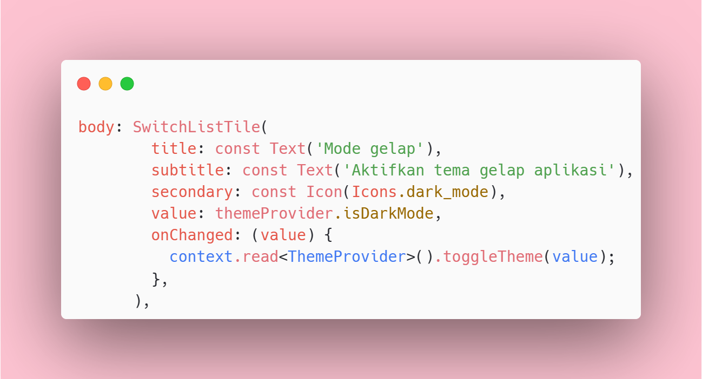 |
home_page.dart |
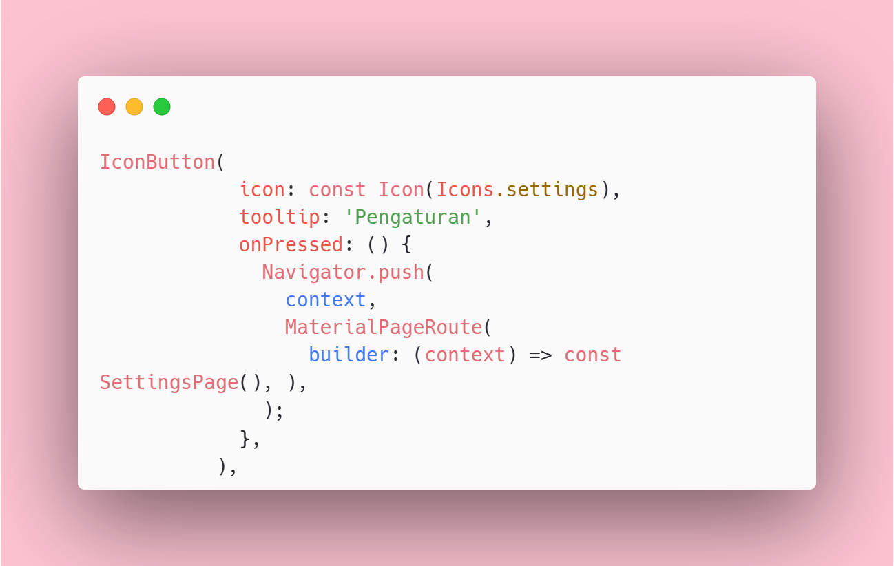 |
Berikut merupakan hasil implementasi fitur tema gelap pada aplikasi ResepKu. Pengguna dapat mengaktifkan mode gelap melalui SwitchListTile pada halaman Pengaturan. Setelah switch diaktifkan, tampilan seluruh aplikasi akan berubah menjadi tema gelap.
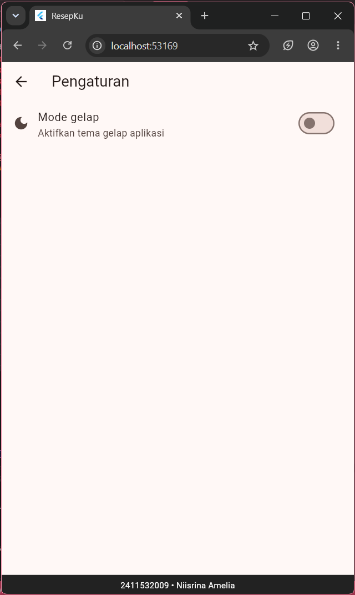
SwitchListTile Mode Gelap pada Halaman Pengaturan
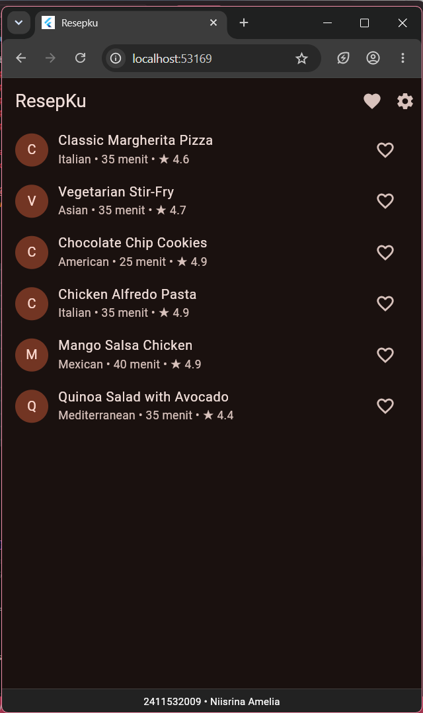
Tampilan Aplikasi ResepKu Setelah Mode Gelap Diaktifkan.
Menambahkan tombol 'Hapus semua' di AppBar halaman Favorit, yang memanggil clear() dari FavoriteProvider
setelah pengguna mengonfirmasi melalui AlertDialog. Tombol harus nonaktif ketika daftar favorit kosong.
| File Program | Dokumentasi Kode Program |
|---|---|
favorite_provider.dart |
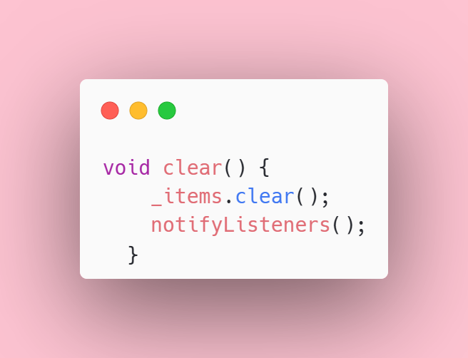 |
favorite_page.dart |
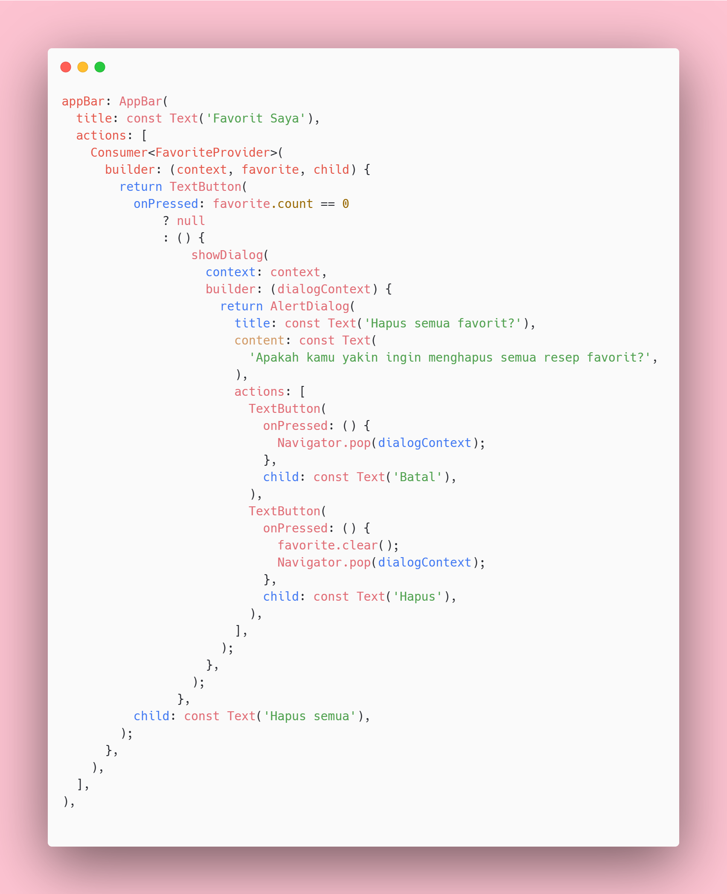 |
Berikut merupakan hasil implementasi fitur Hapus Semua Favorit pada aplikasi ResepKu. Fitur ini memungkinkan pengguna untuk menghapus seluruh resep favorit melalui konfirmasi terlebih dahulu. Setelah semua favorit berhasil dihapus, tombol Hapus semua akan menjadi nonaktif.
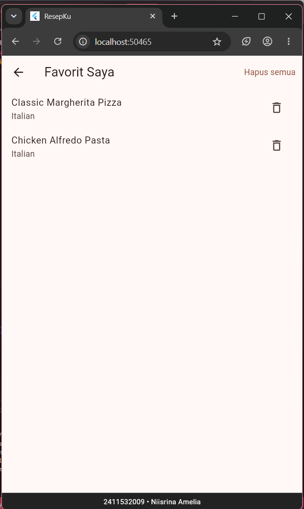
Tombol Hapus Semua pada Halaman Favorit.
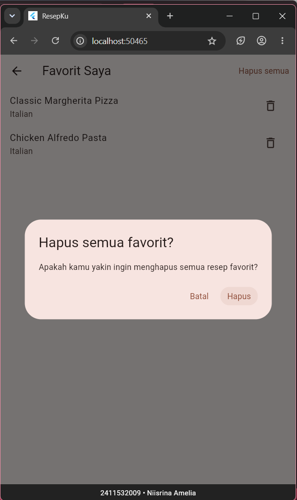
AlertDialog Konfirmasi Penghapusan Favorit.
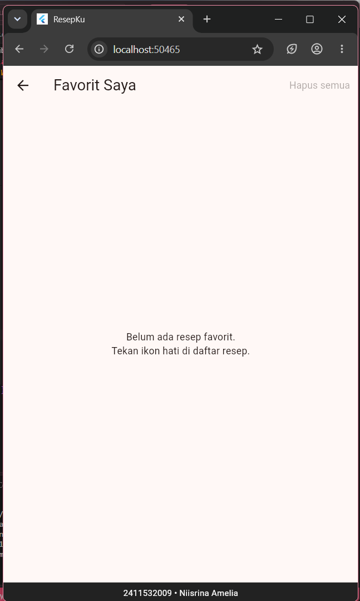
Tampilan Aplikasi ResepKu Setelah Mode Gelap Diaktifkan.
Kode project praktikum dapat diakses melalui repository Github berikut.
Buka Github